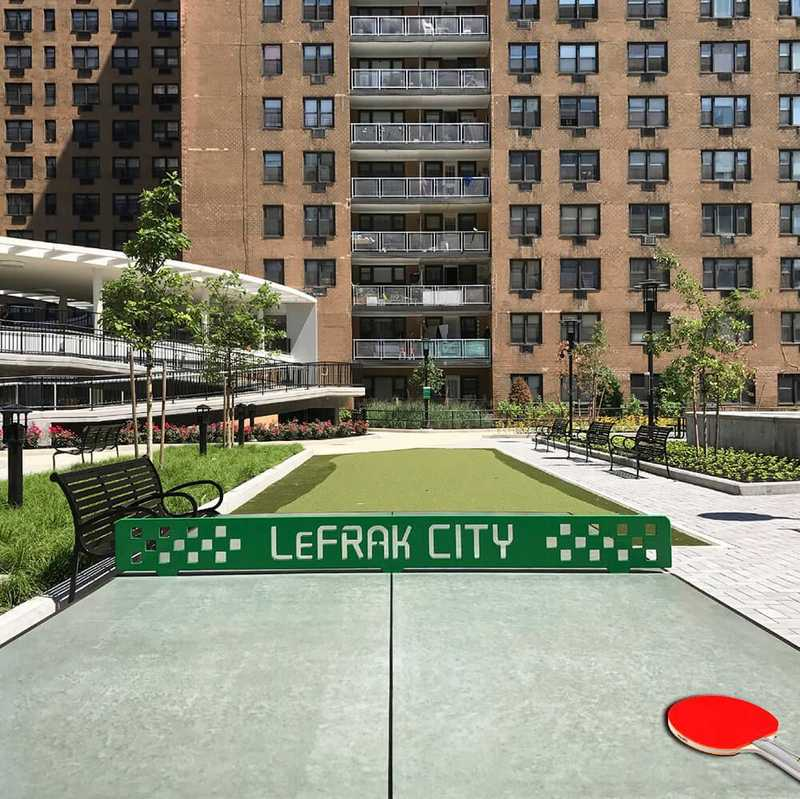

About Me
I was born in Lefrak City, in the heart of Corona, Queens New York. Later on I moved to Rosedale, Queens right off the Jamaica Bay area. I moved there when I gotten older. Although I was born in the United States, my family is from Nigeria. After I graduated from high school I went straight into the workforce doing all sorts of work from being a corporate security guard to technical support personnel. During that transition I ran into roadblocks and detours, that is when I decided to go back to school and pursue a degree. With a passion for media entertainment and me being around technology a large portion of my life; I decided to go for a Multimedia Programming Degree and started my journey in Borough of Manhattan Community College. While I am in school I am still looking for permanent work in Information Technology to help pay for school and see what direction I can go while I am chasing my degree in the technical field.
https://editions.lib.umn.edu/electionacademy/2018/04/18/battle-for-lefrak-city-nyc-polling-place-dispute-back-in-court/ by Doug Chaplin
Flag of Nigeria.svg by Jon Harald Søby
©2005 Midnight Fish Photographs taken erpietri”@”earthlink.net